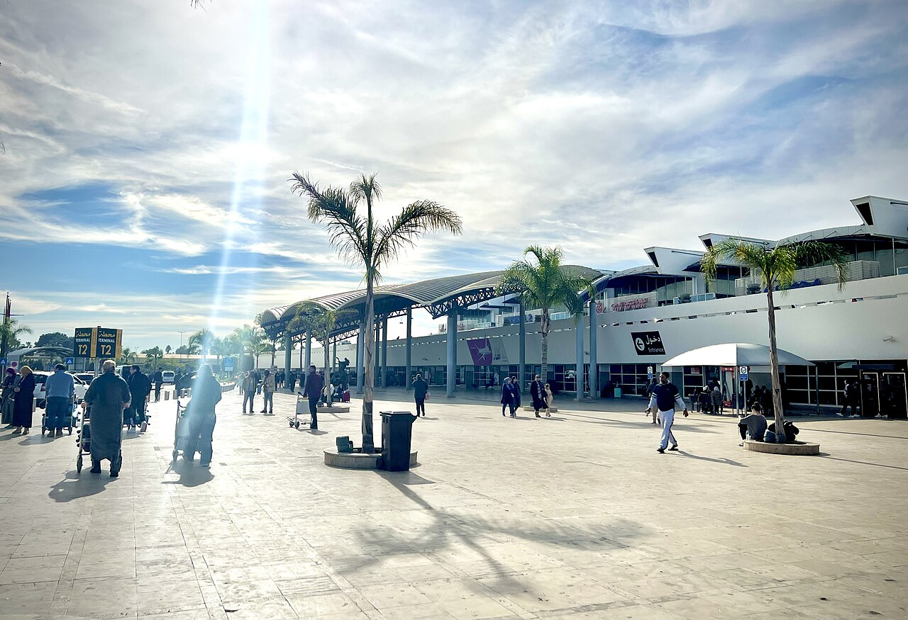

Airport & Intercity Transfers
Landing in Morocco or moving between cities? We run private, driver-led transfers across the country — no shared shuttles, no waiting around, just a comfortable car and a driver who knows exactly where to be and when.

🚗 City-to-City Transfers
Need to get from one Moroccan city straight to another? We arrange private one-way transfers between any two cities, at a time that suits your itinerary — see the routes we run most often below.
🗺️ Customized Transfers
Flying into one city and touring several others before heading home? We build multi-stop private transfers around your exact route, with stops for meals, photos, or sightseeing built in along the way.
🧳 Meet & Greet, Every Time
Every transfer includes a driver waiting with a name board, help with luggage, and a clean, comfortable, air-conditioned vehicle sized to your group — no matter which route you're booking.
↩️ Free Cancellation
Plans change — flights get delayed, itineraries shift. Cancel any transfer free of charge up to 24h before pick-up, same as all our tours.
✈️ Airport Transfers — By City
Private car pick-up and drop-off at every major Moroccan airport. Your driver waits inside arrivals with a name board, and we track your flight so a delay never means an empty pick-up point.
Prices are per vehicle (up to 3 passengers), one-way, for pick-up within that airport's own city. Larger groups or minivans quoted on request. Click any option above to select it.
🛣️ Popular Intercity Routes
Our most-booked private transfers depart from Fes, our home base — every route runs in both directions, and any city pair not listed here is available on request.
Casablanca ⇄ Fes Door-to-Door
Direct private ride between Casablanca Mohammed V Airport (or city centre) and your hotel or riad in Fes, roughly 4 hours by road.
Fes ⇄ Marrakech Door-to-Door
A private crossing of the country in one comfortable ride, with stops for lunch and photos along the way — no overnight stay required.
Fes ⇄ Tangier Door-to-Door
A direct link between the imperial city and the ferry port/airport gateway to Europe, via the scenic Rif foothills.
Finalize Your Booking
Pick an option above, or choose it below, then fill in your details — we'll confirm your transfer within 24 hours.